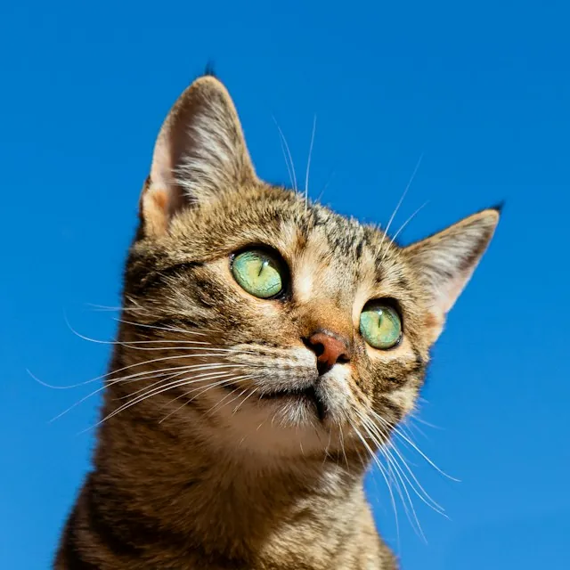

Sinais de dor em gatos
Gato quase não reclama. Repare se ele:
- se esconde com frequência;
- parou de se limpar;
- evita carinho ou contato;
- mia ou vocaliza diferente;
- anda devagar ou mancando.
Viu algum desses? Não espere piorar: agende uma consulta.
Horário de atendimento
Consultas, vacinas, exames e cirurgias para o seu pet, com o Dr. Adalberto e equipe. E a lojinha com remédios, ração e acessórios no mesmo lugar.

Marque o que você está vendo. O resultado aparece ao lado e já monta a mensagem pro WhatsApp da clínica.
Lista de sinais a revisar com o Dr. Adalberto.
Do check-up à cirurgia, no mesmo endereço.
Check-up, filhotes, pets idosos e acompanhamento.
Vacinação de cães e gatos, de filhote a adulto.
Exames laboratoriais e de imagem. quais, na clínica?
Castração e outras cirurgias. quais?
Remédios veterinários na própria clínica.
Caminhas, roupinhas, coleiras, ração e petiscos.

Saiu da consulta com receita? Muitos remédios você já leva dali. E tem coleira, roupinha, caminha, ração e petisco.
Coloque a data da última dose de cada vacina, como está na carteirinha de papel. O site carimba o que está em dia, o que vence logo e o que já passou.
Os dados ficam só neste celular ou computador: na próxima visita ao site, a carteirinha estará aqui.
Filhote faz uma série de doses com intervalo menor: nesse caso, siga o que o veterinário marcou. Vacinas e intervalos a confirmar com o Dr. Adalberto.

O Dr. Adalberto da Silva Junior está à frente da VetCenter desde a abertura, em 2014. É o nome que os tutores mais citam quando falam da clínica.
CRMV-SP a confirmar. Atende silvestres e exóticos? (o logo tem tartaruga, coelho e lagarto)
4,7 de 5 no Google
Dois avisos que a clínica já publicou e que valem para todo tutor.
Gato quase não reclama. Repare se ele:
Viu algum desses? Não espere piorar: agende uma consulta.
Doença grave e contagiosa, comum em filhotes. Os principais sinais:
A prevenção é a vacina em dia, conforme orientação do veterinário.
Rua Marechal Deodoro da Fonseca, 447
Centro, Cravinhos